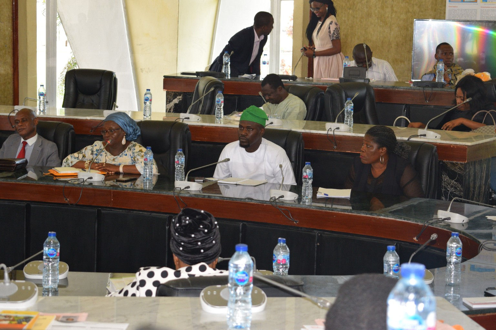
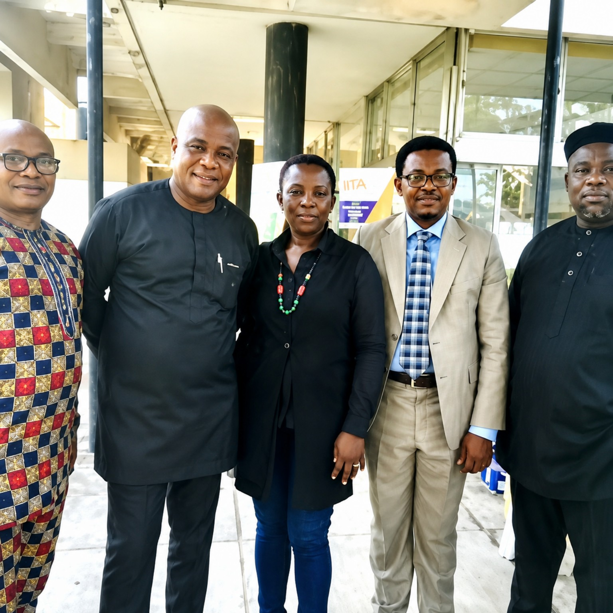
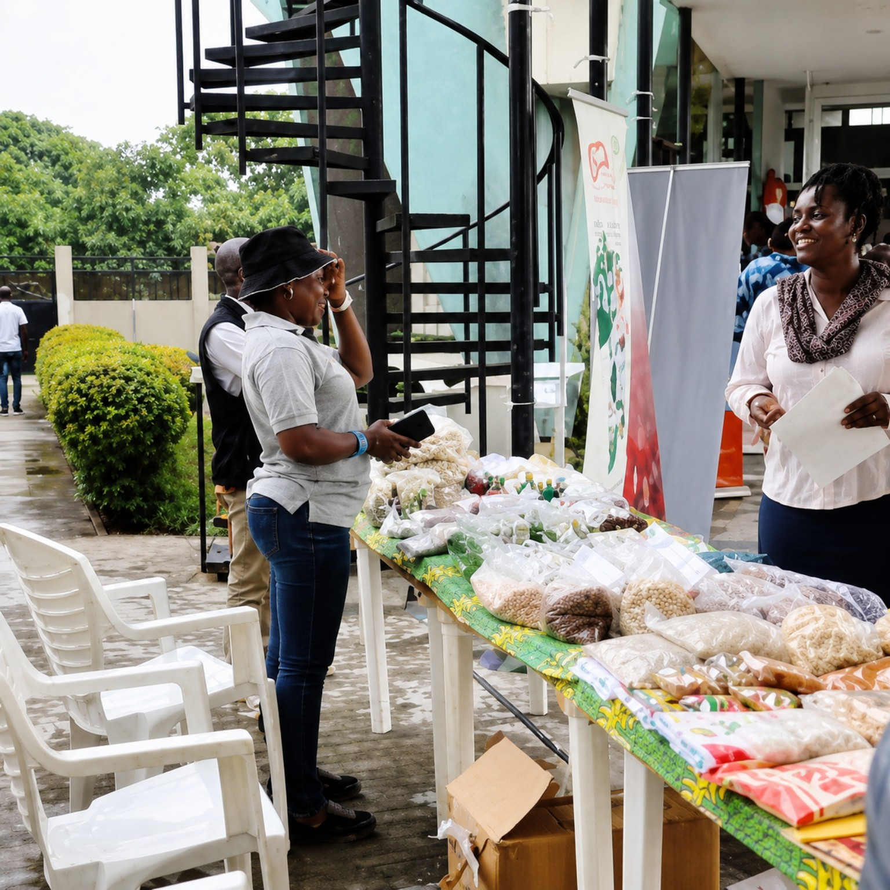
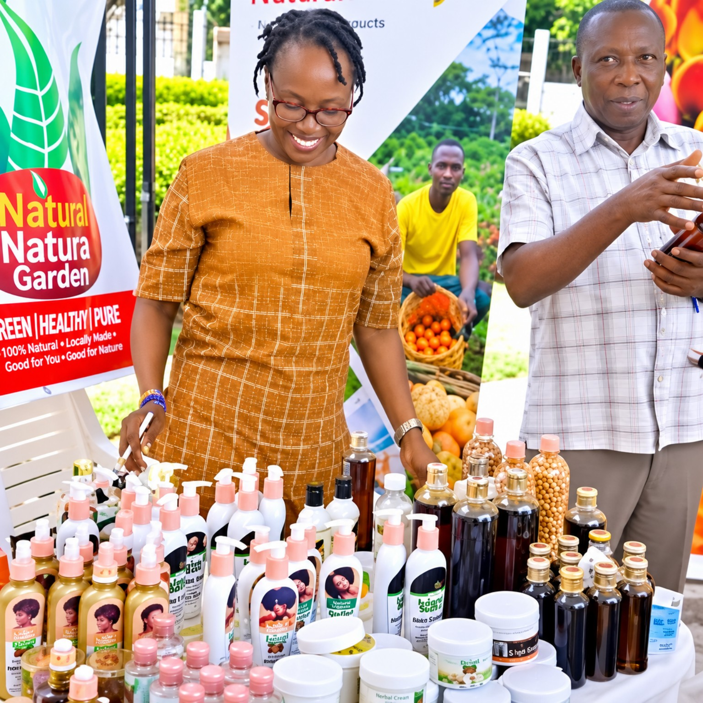
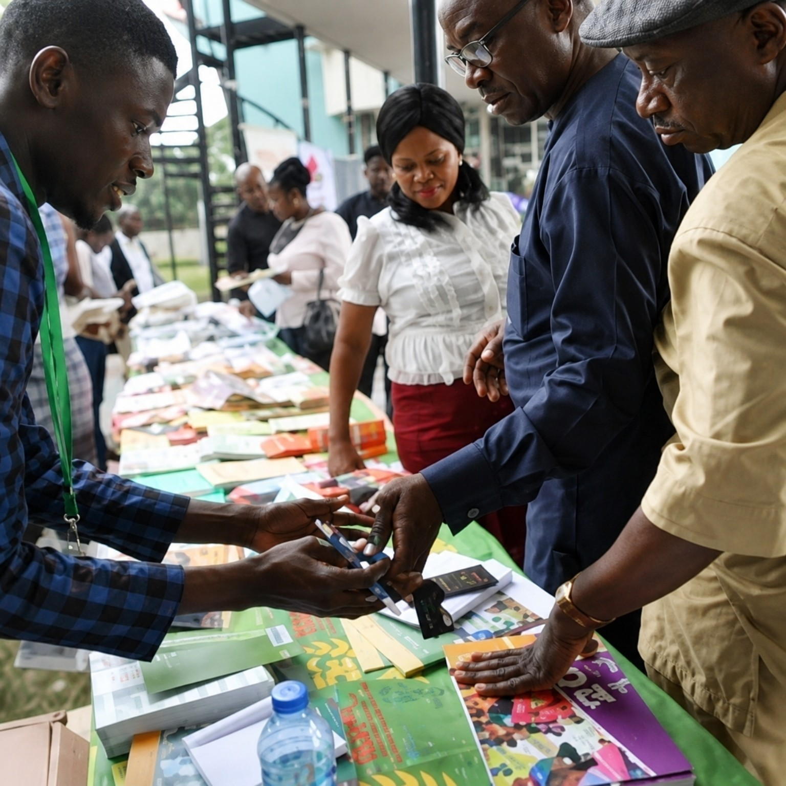
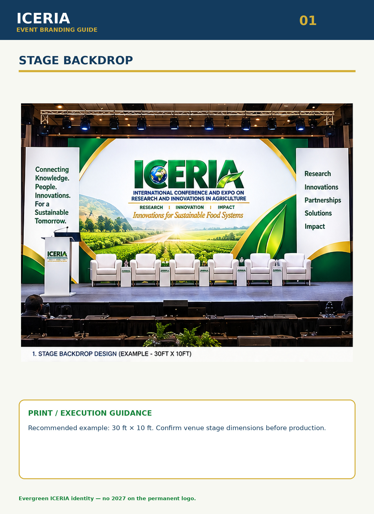

VISUAL ARCHIVE
ICERIA Gallery
A visual record of the ICERIA journey — people, research, exhibitions, partnerships, conference sessions and the evolution toward ICERIA 2027.
ICERIA 2019 • MAIDEN EDITION
Conference, research and people










INSTITUTIONAL PARTICIPATION
Partners, representatives and speakers

Netherlands agricultural representation, ICERIA 2020

IITA participation record

Netherlands — ICERIA 2019
Mr. Bryan Udoh, Agriculture Policy Officer, participated at ICERIA 2019 as a presenter and panelist.
IITA — ICERIA 2019
Documented participants included Katherine Lopez, Yinka Fasogbon, Osunde Timilehin, Victor Saleh, Oyeyemi Azeez, Paul Emmanuel, Oiwoja Odihi and Tunde Sulaiman. Victor Saleh presented on agricultural research innovations and participated in the commercialisation panel.
ICERIA 2027
Current edition visual direction
